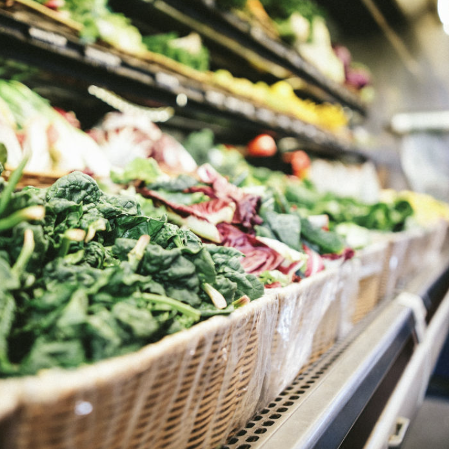
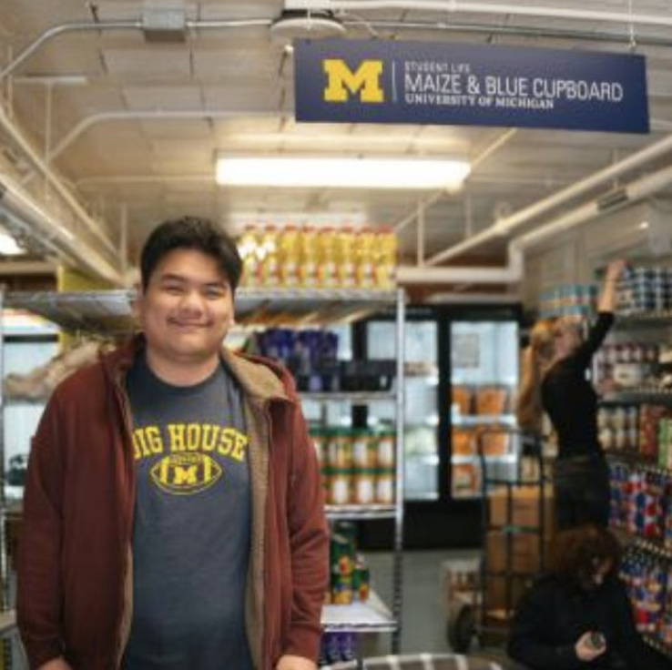

To ensure members of the University of Michigan community—whether on a tight budget or physically restrained from getting to a grocery store—receive equitable access to healthy, nutritious, and nourishing food and the ability to prepare it for themselves or others.
MAKE AN APPOINTMENT NOW
Shopping at the Maize and Blue Cupboard is by appointment only. Please make an appointment by visiting our sign up page here Calendar
WHO WE ARE
College students and staff are experiencing food insecurity at alarming rates. The Maize and Blue Cupboard is here to provide an immediate and comprehensive response for the U-M community. By offering resources, educational opportunities, compassionate support and more, we help students develop the skills to make informed decisions. Read our FAQ to learn more about the Maize and Blue Cupboard and how you can get help.
WHAT WE PROVIDE
NEWS
Fall 2024 Mobile Distribution for North Campus
U-M’s Maize & Blue Cupboard (MBC), the College of Engineering, Student Life, and Ann Arbor-based Food Gatherers will host North Campus mobile food distributions to make MBC resources more accessible for North Campus residents.
 
Mobile Distribution for North Campus — Fall 2023 Semester
Students who live on North Campus have easier access to free groceries thanks to U-M’s Maize & Blue Cupboard (MBC), the College of Engineering, Student Life, and Ann Arbor-based Food Gatherers.
Federal Assistance for Food Insecurity
The U.S. Department of Agriculture offers a nationwide program to help people who are struggling with food insecurity. The national name for the program is Supplemental Nutrition Assistance Program (S
From students, for students: The Maize and Blue Cupboard
From modest beginnings, to a campus staple.
LOCATION

Located in the basement of the Betsy Barbour Residence Hall, please enter via the Maynard entrance only to ensure privacy for residents. Please contact us if you need ramp or elevator access.
HOURS
Hours of Operation: Sunday: 2pm-6pm Monday - Thursday: 3pm-7pm Friday: 12pm-7pm Saturday: closed